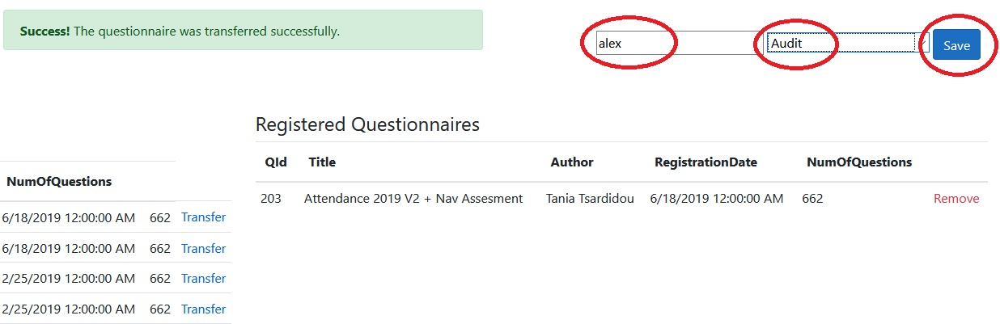

Attendance Web Manual
After logging in, click the "Briefcase" tab, and then click "Transfer" for the desired questionnaire:
Fill your name, choose an attendance type, and click "Save":

This will produce the briefcase file (SDF) which will be downloaded to your computer.
After using "Attendance Portable" to answer the SDF file (as before), open the "Briefcase" tab again and click "Import":
Choose your answered file using the "Browse" and "Upload" buttons:
Your questionnaire will appear on the left. You will have to click it:
Your attendance will be shown on the right. You will again have to choose it by clicking, and then click "Transfer to Database":
Afterwards, you can inspect your new attendance in the database using the "Attendance" tab and clicking "Details":
The "Details" page looks like the below. Here you can see general information for this attendance, inspect all the answers and comments, upload attachments, specify additional details like "Carried Out Status" and "Status", and export the attendance in PDF or Excel formats: